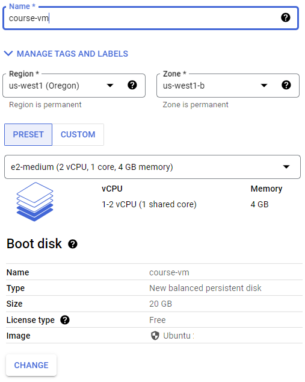
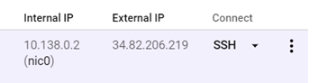
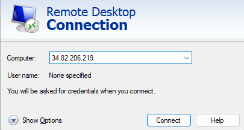

This course requires access to an x86-64 computer that can run VirtualBox and the course virtual machine (a Windows XP machine). If you do not have access to one, labs must be done in person on your classroom lab machine. A video walkthrough is shown below:
You may either run the VM on your own computer or on the classroom lab machine. If running on a lab machine, ensure that you come back to the same machine each class as you will be installing the VM on a local drive.
- Download a copy of the course VM as a .ova file from the course page (
492_WinXP_x86.ova) - Launch VirtualBox. VirtualBox is installed on the lab machines. You will need to download it from https://www.virtualbox.org/ if installing on your own personal computer.
- Within VirtualBox Manager, import VM appliance via:
File=>Import Appliance - Select the
.ovafile you have downloaded - Within VirtualBox Manager, click on your VM and then click on "
Settings". InGeneral=>Basic, change the name of your VM to your OdinID (to appear in screenshots). InSystem=>Motherboard, change the Base Memory slider to 2GB (2048 MB) - Start the VM by double-clicking it, then shut it down so it can perform software updates
- Bring the VM back up and change the Administrator password. Right click "My Computer" => "Manage". Then, select
"Local User and Groups" => "Users". Right-click on Administrator user and click "Set Password"
Incognito mode
To avoid applying the coupon you receive to the incorrect account, ensure that these steps are done in an "Incognito" or "Private Browsing" browser window to set up your account.
Then, visit https://console.cloud.google.com and login using your pdx.edu account to enable GCP. If you haven't used GCP yet and do not mind temporarily putting your credit card on the account, apply for the $300 coupon and use it to create a new billing account. Otherwise, wait for the instructor to email you a course coupon.
Create Project
Click on the pdx.edu organization from the console.

Then, click on "New Project"
Create a Google Cloud project with your ProjectName from above. You should be taken to your project's Home page. For your lab notebook, you will need to ensure that all of your screenshots for your Google Cloud labs include your ProjectName.
To examine your Billing account and its usage, go to the Billing page from the console at https://console.cloud.google.com/billing

The course requires the use of a Ubuntu Linux VM. We can set one up in the cloud for this purpose. Begin by visiting the Compute Engine Google Cloud console at https://console.cloud.google.com/compute .
Option #1: Cloud Shell
To launch a VM using Cloud Shell, go to the web console and click on the Cloud Shell icon as shown:

Cloud Shell consists of a container with the Google Cloud SDK pre-installed. As part of the SDK, the gcloud command-line interface is included. The command is similar to other cloud CLIs such as aws in that it supports sub-commands that specify which cloud service is being accessed. For example, the command gcloud compute create instances will create a virtual machine instance based on the parameters provided. Use the command below to instantiate the VM in the us-west1 region.
gcloud compute instances create course-vm \
--image-family=ubuntu-2204-lts \
--image-project=ubuntu-os-cloud \
--boot-disk-size=20G \
--zone=us-west1-b \
--machine-type=e2-mediumOption #2: Web console
One can also launch VMs via the web console. Navigate to the Compute Engine service at https://console.cloud.google.com/compute and create an instance. Configure the name, region, zone, and boot disk in the UI. Ensure you select a boot disk size of at least 20GB. Then, launch the instance.

We will now setup a remote desktop on the Compute Engine using the Remote Desktop Protocol (RDP) in order to enable a graphical interface to the VM.
Connect to instance
To connect to the instance from Cloud Shell, you can run the command below:
gcloud compute ssh course-vmAlternatively, you can also connect via the web console. To do so, navigate to the VM instances on Compute Engine, then click on "ssh" to bring up a shell session on it.

Setup
On the VM, install the course's development tools.
sudo apt update sudo apt install python3-pip python3-dev python3-venv git -y
Then, install docker and its packages. Add yourself to the docker group so that you're able to run the docker commands without sudo.
sudo apt install docker.io -y sudo usermod -a -G docker $(whoami)
Next, install the graphical software packages.
sudo apt install xfce4 xfce4-goodies xrdp -yCheck that the xrdp daemon is enabled and running.
sudo systemctl status xrdpIf not, start it.
sudo systemctl start xrdpOur RDP setup will require a username and password to authenticate. As Compute Engine instances typically perform authentication via OAuth2 and ssh keys, we will need to set a password for our account on the VM. To do so, run the following to set your account password on the VM for your username (as retrieved via the environment variable $USER).
sudo passwd $USERInstall a web browser
If you prefer Firefox, install it directly.
sudo apt install firefox -yIf you prefer Chrome, then install Google's signing key, add Google's repository to your system, and then install the browser.
wget -q -O - https://dl.google.com/linux/linux_signing_key.pub | sudo gpg --dearmour -o /usr/share/keyrings/google_linux_signing_key.gpg
sudo sh -c 'echo "deb [arch=amd64 signed-by=/usr/share/keyrings/google_linux_signing_key.gpg] http://dl.google.com/linux/chrome/deb/ stable main" > /etc/apt/sources.list.d/google.list'
sudo apt update
sudo apt install google-chrome-stable -yConnect via RDP
On your local machine, connect to the VM's External IP address (shown above in the web console) using an RDP client. You may utilize clients that are built into the browser (e.g. Chrome Remote Desktop extension) or native clients on Windows (Remote Desktop Connection), MacOS (Microsoft Remote Desktop), or Linux (FreeRDP or remmina) to connect to the VM.

Then, login using your username and the password you set for it to bring up a graphical desktop on the VM.
Stop the VM
In order to save costs while keeping the machine image around so that it can be started later, exit out of the session and stop the VM. This can be done via the UI or via the command-line in Cloud Shell via:
gcloud compute instances stop course-vmThere is a Slack workspace for Computer Science students here at PSU. If you haven't already, create a Slack account, join the workspace at https://pdx-cs.slack.com and add the course channel linked on the course web page. All course communication will be done through this platform; check the pinned section for important updates. Note that the course has a corresponding webpage for more permanent information.
Throughout the quarter, you will be maintaining a lab notebook that records your progress on lab assignments using any word document application that you are comfortable with such as a Google Doc (recommended), a Microsoft Word document, or a LibreOffice document. The lab notebook that will contain your write-ups of each lab.
The write-up should include answers to questions asked and screenshots of the completed work (via gnome-screenshot, gimp, Print Screen, etc.). The notebook will be graded using the following rubric:
- Completion of exercises including answers to questions and screenshots
- Inclusion of your OdinId in all screenshots that are requested
- Inclusion of a table of contents linking to individual labs completed
While you are encouraged to work together on labs, each student must submit an individual notebook at the end of the quarter. A PDF version of the final lab notebook should be submitted in the course's Canvas shell.